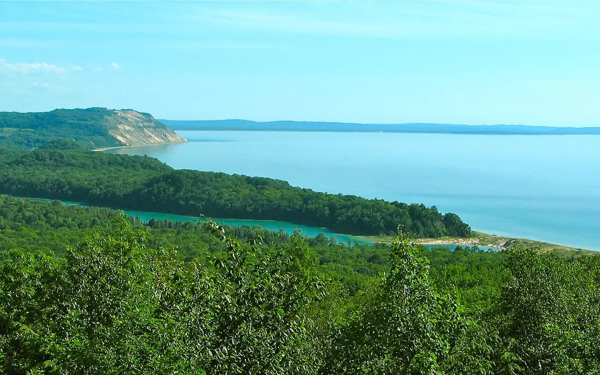

North Bar Lake — Sleeping Bear Dunes
Michigan, États-Unis · baignade, paddle, kayak

Petit lac peu profond séparé du lac Michigan par un cordon de sable, au pied des dunes de Sleeping Bear. Son eau plus calme et plus tiède en fait une baignade familiale, avec le grand lac à quelques pas.
- Lieu
- Michigan, États-Unis
- Niveau
- Débutant
- Activités
- baignade, paddle, kayak
- Type d'eau
- lake
- Coordonnées
- 44.84, -86.06 (position approximative du secteur)
Dangers à connaître
- Côté lac Michigan : courants dangereux par vent fort, surtout près du chenal de sortie.
- Pas de surveillance de baignade.
- Laissez-passer du parc national obligatoire.
Le conseil d'Ocean Buddy
Garde le lac intérieur pour les enfants et le paddle ; côté lac Michigan, baigne-toi seulement par temps calme.
Ouvrir dans Ocean Buddy Télécharger sur l'App Store
Source : Fiche Ocean Buddy · septembre 2026 · à vérifier localement.